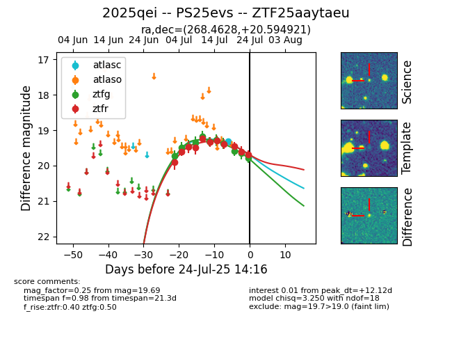

Target 2025qei at 2025-07-24 14:16, see:
FINK: fink-portal.org/2025qei
Lasair: lasair-ztf.lsst.ac.uk/objects/2025qei
ALeRCE: alerce.online/object/2025qei
TNS: wis-tns.org/object/2025qei
YSE: ziggy.ucolick.org/yse/transient_detail/2025qei
alt names
ZTF25aaytaeu (ztf,fink)
2025qei (tns,yse)
PS25evs (panstarrs)
coordinates:
equatorial (ra, dec) = (268.4628,+20.59492)
galactic (l, b) = (45.7882,+21.56373)
photometry
last atlasc=19.31, ztfg=19.79, ztfr=19.69
1 atlasc, 11 ztfg, 11 ztfr detections
